Edge Detection
This numerical tour explores local differential operators (grad, div, laplacian) and their use to perform edge detection.
Contents
Installing toolboxes and setting up the path.
You need to download the following files: signal toolbox and general toolbox.
You need to unzip these toolboxes in your working directory, so that you have toolbox_signal and toolbox_general in your directory.
For Scilab user: you must replace the Matlab comment '%' by its Scilab counterpart '//'.
Recommandation: You should create a text file named for instance numericaltour.sce (in Scilab) or numericaltour.m (in Matlab) to write all the Scilab/Matlab command you want to execute. Then, simply run exec('numericaltour.sce'); (in Scilab) or numericaltour; (in Matlab) to run the commands.
Execute this line only if you are using Matlab.
getd = @(p)path(p,path); % scilab users must *not* execute this
Then you can add the toolboxes to the path.
getd('toolbox_signal/'); getd('toolbox_general/');
Diffusion and Convolution
To obtain robust edge detection method, it is required to first remove the noise and small scale features in the image. This can be achieved using a linear blurring kernel.
Size of the image.
n = 256*2;
Load an image \(f_0\) of \(N=n \times n\) pixels.
f0 = load_image('hibiscus',n);
f0 = rescale(sum(f0,3));
Display it.
clf; imageplot(f0);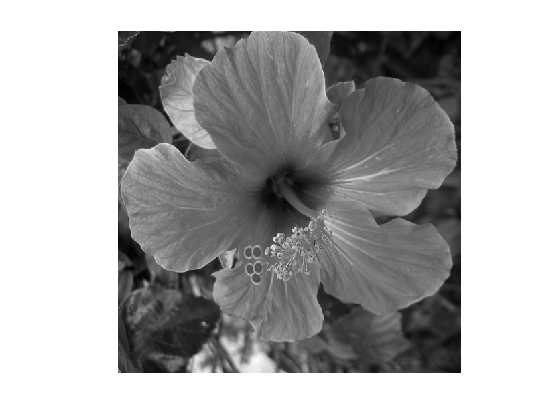
Blurring is achieved using convolution: \[ f \star h(x) = \sum_y f(y-x) h(x) \] where we assume periodic boundary condition.
This can be computed in \(O(N\log(N))\) operations using the FFT, since \[ g = f \star h \qarrq \forall \om, \quad \hat g(\om) = \hat f(\om) \hat h(\om). \]
cconv = @(f,h)real(ifft2(fft2(f).*fft2(h)));
Define a Gaussian blurring kernel of width \(\si\): \[ h_\si(x) = \frac{1}{Z} e^{ -\frac{x_1^2+x_2^2}{2\si^2} }\] where \(Z\) ensure that \(\hat h(0)=1\).
t = [0:n/2 -n/2+1:-1]; [X2,X1] = meshgrid(t,t); normalize = @(h)h/sum(h(:)); h = @(sigma)normalize( exp( -(X1.^2+X2.^2)/(2*sigma^2) ) );
Define blurring operator.
blur = @(f,sigma)cconv(f,h(sigma));
Exercice 1: (check the solution) Test blurring with several blurring size \(\si\).
exo1;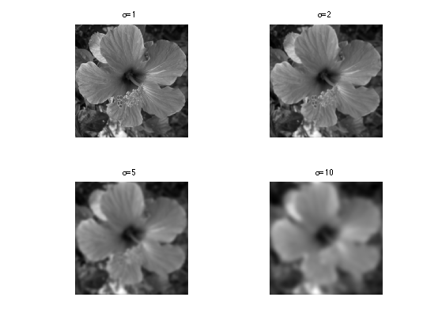
Gradient Based Edge Detectiors
The simplest edge detectors only make use of the first order derivatives.
For continuous functions, the gradient reads \[ \nabla f(x) = \pa{ \pd{f(x)}{x_1}, \pd{f(x)}{x_2} } \in \RR^2. \]
We discretize this differential operator using first order finite differences. \[ (\nabla f)_i = ( f_{i_1,i_2}-f_{i_1-1,i_2}, f_{i_1,i_2}-f_{i_1,i_2-1} ) \in \RR^2. \] Note that for simplity we use periodic boundary conditions.
Compute its gradient, using (here decentered) finite differences.
s = [n 1:n-1]; nabla = @(f)cat(3, f-f(s,:), f-f(:,s));
One thus has \( \nabla : \RR^N \mapsto \RR^{N \times 2}. \)
v = nabla(f0);
One can display each of its components.
clf; imageplot(v(:,:,1), 'd/dx', 1,2,1); imageplot(v(:,:,2), 'd/dy', 1,2,2);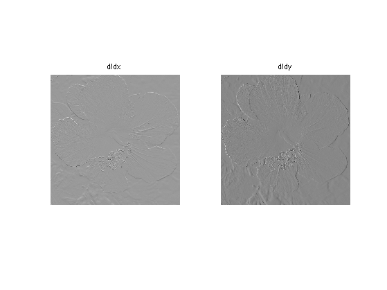
A simple edge detector is simply obtained by obtained the gradient magnitude of a smoothed image.
A very simple edge detector is obtained by simply thresholding the gradient magnitude above some \(t>0\). The set \(\Ee\) of edges is then \[ \Ee = \enscond{x}{ d_\si(x) \geq t } \] where we have defined \[ d_\si(x) = \norm{\nabla f_\si(x)}, \qwhereq f_\si = f_0 \star h_\si. \]
Compute \(d_\si\) for \(\si=1\).
sigma = 1; d = sqrt( sum(nabla( blur(f0,sigma) ).^2,3) );
Display it.
clf; imageplot(d);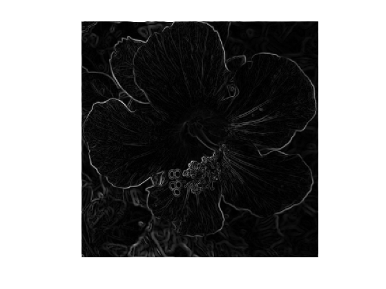
Exercice 2: (check the solution) For \(\si=1\), study the influence of the threshold value \(t\).
exo2;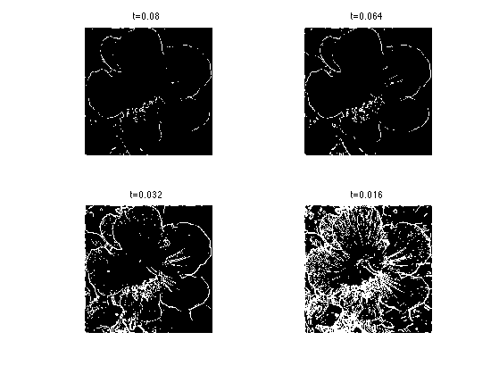
Exercice 3: (check the solution) Study the influence of \(\si\).
exo3;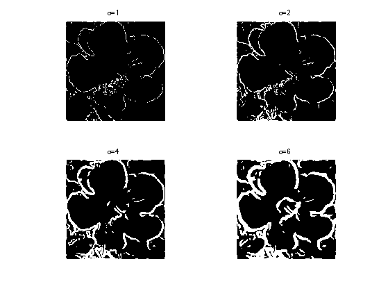
Zero-crossing of the Laplacian
Defining a Laplacian requires to define a divergence operator. The divergence operator maps vector field to images. For continuous vector fields \(v(x) \in \RR^2\), it is defined as \[ \text{div}(v)(x) = \pd{v_1(x)}{x_1} + \pd{v_2(x)}{x_2} \in \RR. \] It is minus the adjoint of the gadient, i.e. \(\text{div} = - \nabla^*\).
It is discretized, for \(v=(v^1,v^2)\) as \[ \text{div}(v)_i = v^1_{i_1+1,i_2} + v^2_{i_1,i_2+1}. \]
t = [2:n 1]; div = @(v)v(t,:,1)-v(:,:,1) + v(:,t,2)-v(:,:,2);
The Laplacian operatore is defined as \(\Delta=\text{div} \circ \nabla = -\nabla^* \circ \nabla\). It is thus a negative symmetric operator.
delta = @(f)div(nabla(f));
Display \(\Delta f_0\).
clf; imageplot(delta(f0));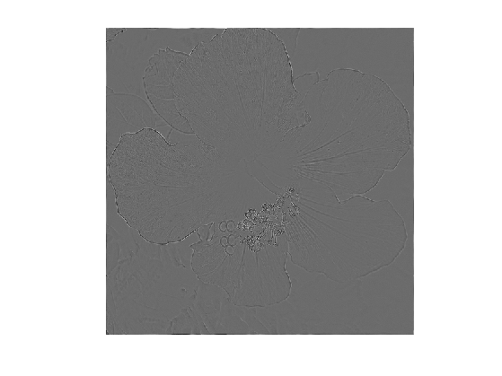
Check that the relation \( \norm{\nabla f} = - \dotp{\Delta f}{f}. \)
dotp = @(a,b)sum(a(:).*b(:));
fprintf('Should be 0: %.3i\n', dotp(nabla(f0), nabla(f0)) + dotp(delta(f0),f0) );
Should be 0: -8.879e-11
The zero crossing of the Laplacian is a well known edge detector. This requires first blurring the image (which is equivalent to blurring the laplacian). The set \(\Ee\) of edges is defined as: \[ \Ee = \enscond{x}{ \Delta f_\si(x) = 0 } \qwhereq f_\si = f_0 \star h_\si . \]
It was proposed by Marr and Hildreth:
Marr, D. and Hildreth, E., Theory of edge detection, In Proc. of the Royal Society London B, 207:187-217, 1980.
Display the zero crossing.
sigma = 4; clf; plot_levelset( delta(blur(f0,sigma)) ,0,f0);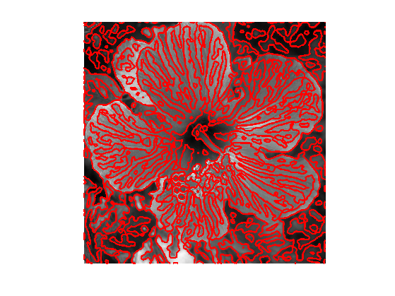
Exercice 4: (check the solution) Study the influence of \(\si\).
exo4;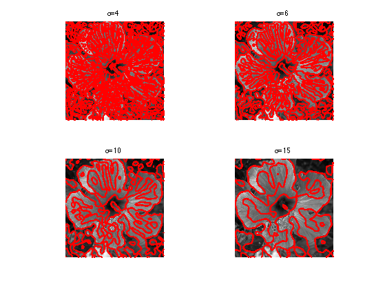
Hessian Based Edge Detectors
Zero-crossing of the Laplacian can be shown to return false edges corresponding to local minima of the gradient magnitude. Moreover, this operator gives poor localization at curved edges.
In order to improve over this basic detector, more advanced edge detectors make use of the second order derivatives. Several authors have advocated for this choice, in particular:
Haralick, R., Digital step edges from zero crossing of second directional derivatives, IEEE Trans. on Pattern Analysis and Machine Intelligence, 6(1):58-68, 1984.
Canny, J., A computational approach to edge detection, IEEE Trans. on PAMI, 8(6):679-698, 1986
Deriche, R., Using Canny's criteria to derive a recursively implemented optimal edge detector. International Journal of Computer Vision, 1:167-187, 1987.
They define the edge locations \(\Ee\) as the zero-crossings of the second-order directional derivative in the gradient direction. \[ \Ee = \enscond{x}{ \dotp{ H(x) \times g_\si(x) }{ g_\si(x) } = 0 } \qwhereq g_\si = \nabla ( f_0 \star h_\si ) \] where \(\times\) is the matrix-vector multiplication.
Define centered first order derivatives.
dx = @(f)(f(s,:)-f(t,:)) / 2; dy = @(f)dx(f')';
Define second order derivatives.
s = [2:n 1]; t = [n 1:n-1]; d2x = @(f)f(s,:) + f(t,:) - 2*f; d2y = @(f)d2x(f')'; dxy = @(f)dy(dx(f));
Define Hessian operator.
hessian = @(f)cat(3, d2x(f), dxy(f), d2y(f));
Compute \(g_\si = \nabla (f_0 \star h_\si). \)
sigma = 6; g = grad( blur(f0,sigma) );
Compute \(h_\si = H (f_0 \star h_\si). \)
h = hessian( blur(f0,sigma) );
Compute \( a_\si(x) = h_\si(x) \times g_\si (x) \) (this is a matrix times vector operation).
a = h(:,:,1:2).*repmat(g(:,:,1), [1 1 2]) + ...
h(:,:,2:3).*repmat(g(:,:,2), [1 1 2]);
Display the level set of \(\dotp{a_\si(x)}{g_\si(x)}\).
clf; plot_levelset( sum(a.*g, 3) ,0,f0);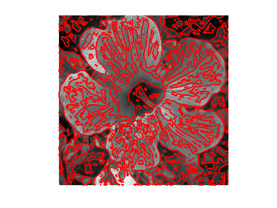
Exercice 5: (check the solution) Study the influence of \(\si\).
exo5;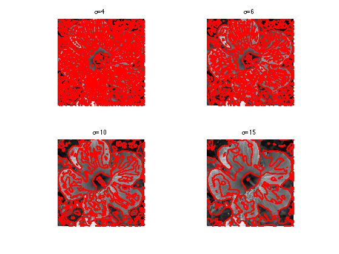